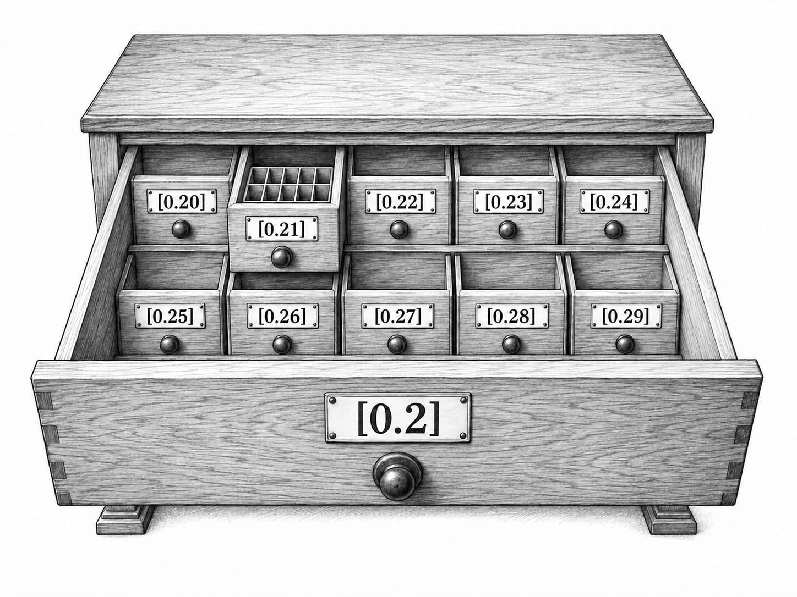
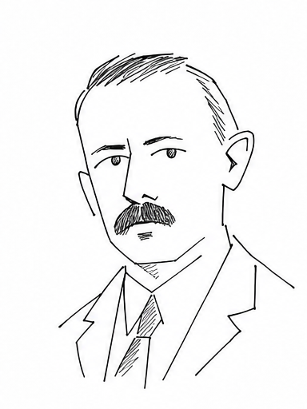

Chapter 3 Drawers and games
Give someone else the pencil. Between the blocks of our growing-gap decimal, they write a hundred ones, or a thousand sevens, and hand it back. Our carefully planned number has acquired a collaborator with different intentions. The zeros we wrote are still there. So are the ones. The recipe is ruined; its proof may survive.
In 1935 a question about this kind of interference entered a notebook kept at the Scottish Café in Lwów. Mathematicians including Stefan Banach and Stanisław Mazur met there, recording problems and sometimes prizes for their solutions. In Problem 43, Mazur proposed a game in which two players choose successively smaller intervals. He offered a bottle of wine for resolving its connection with a mathematical way of describing small sets.
1
Problem 43 in Mauldin’s edition of the Scottish Book.
Put \(0.\) on a sheet between two players. The first wants the completed number to be a fraction; the second wants it irrational. They take turns appending digits, as many as they like at a time: one, a thousand, any finite number. Each must write at least one and hand the pencil back. A new block narrows the possible numbers, as a smaller interval did in Mazur’s game. Earlier digits stay where they are. An opponent with the eraser would be playing a different game.
Perhaps the first player writes \(2\text{,}\) the second writes \(17\text{,}\) and the first writes \(004\text{.}\) Their page develops like this:
\begin{equation*}
0.2\qquad\longrightarrow\qquad0.217
\qquad\longrightarrow\qquad0.217004.
\end{equation*}
After these moves, either player could still win. Continuing with zeros would give a fraction. Continuing with the growing-gap pattern would give an irrational number. Of course, neither player can simply insist on such a continuation: the other player gets another turn.
There is no last turn. Each move adds digits, so every place eventually gets one, and the whole sequence names a number between zero and one. All nines name one. The players will never have the entire answer lying on the table. We can still ask who wins: the completed infinite play either names a fraction or it does not. Winning concerns that whole play.
Take the second player’s seat. Even our growing-gap rule can survive an opponent: write one zero and a one on the first turn, two zeros and a one on the second, and keep lengthening our block of zeros. The other player may put whatever they like between our turns. They cannot remove our arbitrarily long runs of zeros, and they cannot make the ones we keep contributing stop arriving. The same two-case argument from the previous chapter defeats every repeating tail: a repeated block with a one cannot survive our long stretches of zeros, and a repeated block without one cannot survive the ones we keep adding. We know the result is irrational, although our opponent helps decide which irrational it is.
Another strategy will take us beyond repetition. Give each fraction its own turn. We can list them by starting with denominator one, then two, then three, and for each denominator listing numerators from zero up to it. A stage finishes before the next begins. Every fraction between zero and one eventually appears. Repeated entries are harmless: no fraction becomes harder to exclude because it has arrived on the list twice.
Beside each fraction put its decimal names that begin with \(0.\text{.}\) Zero contributes \(0.000\ldots\text{,}\) and one contributes \(0.999\ldots\text{.}\) For a fraction strictly between them, include both names whenever there are two. Thus one half contributes both \(0.5000\ldots\) and \(0.4999\ldots\text{.}\) Our aim is to disagree with every expansion on this enlarged list. Long division supplies as many digits of a listed fraction as we need; its repeating remainders also tell us when there is a terminating name and a second name ending in nines. These are finite tasks for each particular fraction.
Before taking on the list, try one half. Our opponent has written \(0.49\text{.}\) Adding nine might feel like moving away from \(0.5000\ldots\text{,}\) but it leaves \(0.4999\ldots\) available. The second name is waiting exactly where we might overlook it.
Write zero. Now the paper begins \(0.490\text{:}\) it disagrees with \(0.5000\ldots\) at the first digit and with \(0.4999\ldots\) at the third. Neither disagreement can be repaired by writing farther along the row.
Our first turn deals with the first listed expansion. Compare it with the page. If a disagreement is already there, our target is already excluded; add a zero to complete the required move. If the digits still agree, calculate the listed expansion’s next digit and write a different one. On the second turn use the second entry, and continue down the list. There is only one target to worry about on any particular turn.
Suppose that target is \(1/3=0.333\ldots\) and the page currently says \(0.3\text{.}\) We append four, making \(0.34\text{.}\) Our opponent could write a thousand threes in reply. The four would still be sitting in the second place, unmoved by this enthusiasm. If one half is the next target, its two names start with five and four; our initial three has already defeated both. Some turns have been won before they begin.
The millionth entry has to wait for our millionth turn, but it will get that turn. Only finitely many moves precede it, each of finite length. We leave a disagreement when its turn arrives. Every name is eventually excluded, so the completed number is irrational. Writing a thousand pages on one turn can make us wait; it cannot deprive us of a place for our next disagreement. Even this unusually tiresome opponent must return the pencil.
Keep the game but change what counts as a win. One player may want a seven to appear, or may want sevens to keep appearing no matter how far the writing goes. We will call these possibilities events: things that can happen during play, or properties of the whole infinite continuation. The same marks can answer very different questions depending on which event we have chosen.
In our sample play, writing \(17\) settles “a seven appears.” There it is, on the page. It gives much less help with “sevens keep appearing.” The one seven might have company later, or it might spend the rest of the decimal alone. A finite piece of the page settles some events. Others remain undecided however long that finite piece becomes.
Before the game, we agree which event the first player wants. The second wants it to fail. The event depends on the digits, or on the real number they name, rather than on who wrote which digit. Our original event was “the result is rational,” and we found a winning rule for the second player. René Baire’s work will help us see what made that rule possible.
The page says \(0.2\text{.}\) Imagine a drawer labeled \([0.2]\) containing every paper that could continue it. One begins \(0.20000\ldots\text{,}\) another \(0.217004\ldots\text{,}\) another \(0.29999\ldots\text{.}\) The label tells us what all these papers already have in common. What comes after the two is still open.
Open the drawer and sort the papers by their next digit. There are ten smaller drawers:
\begin{equation*}
\begin{gathered}
{}[0.20],\ [0.21],\ [0.22],\ [0.23],\ [0.24],\\
{}[0.25],\ [0.26],\ [0.27],\ [0.28],\ [0.29].
\end{gathered}
\end{equation*}
Open \([0.21]\) and there are ten more, \([0.210]\) through \([0.219]\text{.}\) Each of those opens in the same way. This furniture has no bottom drawer. Wherever a finite label brings us, all ten choices for the next digit are waiting inside.

Writing another digit chooses a smaller drawer. Writing several digits goes down several levels at once. After the moves \(2\text{,}\) \(17\text{,}\) and \(004\text{,}\) we are inside
\begin{equation*}
[0.217004]\ \text{inside}\ [0.217]\ \text{inside}\ [0.2].
\end{equation*}
The other player can choose how much farther to go on a turn. They must still continue inside the drawer our shared page has reached.
Our old pair of names reappears at the join between drawers. \([0.20]\) contains the paper \(0.209999\ldots\text{,}\) and \([0.21]\) contains \(0.210000\ldots\text{.}\) These are different papers naming the same number. Their numerical ranges meet at \(0.21\text{.}\) The game allows both papers, so it allows two ways of arriving at that shared edge.
A paper belongs to just one of the ten next drawers, because its next digit has just one value. A number at a shared edge has two papers, one in each neighboring drawer. While playing, we follow the particular paper our moves produce. If our event concerns a real number, both its names count: “the result is \(0.21\)” includes the two papers we have just found. The physical page tells us which of the two names we are following.
The question behind these drawers is older than the café game. René Baire studied functions and the places where continuity fails. Such exceptional places can be difficult to describe: merely counting them may tell us very little about how they are scattered. Baire’s work in the late 1890s developed another way to examine their smallness. At our table, his idea becomes a question about room to move. An event might allow infinitely many outcomes, yet every drawer might still contain a smaller drawer entirely clear of it. One finite move could make that event impossible for the rest of the play.
2
Baire’s 1900 paper, “Nouvelle démonstration d’un théorème sur les fonctions discontinues,” returns to the questions about continuity studied in his 1899 thesis. Our decimal game is a later way of presenting the category method.
Try the event “no seven ever appears.” Wherever the first player has taken us, we can append seven. Every continuation then fails their event. If they have already written a seven, they have done this work for us, and any further move preserves the failure.
In the drawer picture, every drawer contains a smaller drawer in which the event is impossible. An event with this property is called nowhere dense. In the language of our game:
Whatever finite beginning is on the page, we can add a finite block after which every continuation avoids the event.
Hold the drawer open. A single paper free of the event would give us something to hope for, but our opponent is not obliged to choose it. We need a smaller drawer in which every paper is free of the event. Then whatever their next block does, it only sorts those already safe papers into still smaller drawers. The pencil can leave our hand without taking the escape with it.
Try another event: “the completed number is \(0.2531415\ldots\text{.}\)” If the page says \(0.25\text{,}\) append seven. The new paper begins \(0.257\text{,}\) and its value can never be the specified number. If the page already begins \(0.31\text{,}\) that number has been left behind and any further move will do.
A specified real occupies at most two decimal addresses, even if we cannot calculate its digits. At most two of the ten next drawers can hold those addresses. Other drawers are available. That proves there is room to escape. It does not automatically tell a worker which drawer to open: with a difficult description of the real, finding those safe labels may be beyond the worker’s instructions.
Thus “the result equals this one real” is nowhere dense, just like “no seven ever appears.” The latter allows infinitely many results. Baire’s kind of smallness concerns the room left around them, rather than how many there are.

René Baire (1874–1932)
Now give the first player a more resilient event: “only finitely many sevens appear.” Our next seven will not defeat it. Neither will a million sevens in a row. That magnificent contribution could still contain the last seven of the entire decimal. However much we do on one turn, continuing forever with zeros will remain possible.
We can describe all the ways this event can happen by making a numbered list of simpler events:
\(F_1\text{:}\) there is no seven after position one.\(F_2\text{:}\) there is no seven after position two.\(F_3\text{:}\) there is no seven after position three.Continue with every positive integer.
If only finitely many sevens appear, there is a position past the last one, so one of these statements holds. If no seven appears, they all hold. Conversely, if one of them holds, all sevens are confined to finitely many positions. The original event therefore happens exactly when at least one of the \(F_n\) happens.
Each \(F_n\) can be escaped in one turn. Continue past position \(n\text{,}\) if necessary, and write seven. Every later continuation now fails \(F_n\text{,}\) so \(F_n\) is nowhere dense. The more resilient event has separated into numbered pieces, each of which we know how to defeat. It will take repeated moves to deal with all the pieces.
An event assembled this way is called meager: it is the union of a countable list of nowhere-dense events. “Union” here means that at least one of the listed events happens. “Countable” means we can give the entries positions one, two, three, and so on; finite lists are allowed too. Entries may repeat, and a play may belong to several of them.
After any move, “only finitely many sevens” remains possible: zeros could occupy all the later places. Yet writing a seven on every turn defeats it. Possibility at each finite stage has failed to give the event a way to survive our whole play. The word meager captures this repeated-escape behavior, without assigning a numerical probability.
First let us choose all the digits, without an opponent. We are given a meager event as nowhere-dense pieces \(F_1,F_2,F_3,\ldots\text{.}\) Start anywhere, perhaps at \(0.21\text{.}\) Add a nonempty finite block entering a drawer clear of \(F_1\text{.}\) From that drawer, find a further block taking us clear of \(F_2\text{.}\) Keep going through the list. We need only make the next escape; the earlier escapes stay accomplished.
For the seven example, a few stages might look like this:
| stage | beginning after the choice | targets secured so far |
| 1 | \(0.217\) | \(F_1\) |
| 2 | \(0.217047\) | \(F_1,F_2\) |
| 3 | \(0.217047387\) | \(F_1,F_2,F_3\) |
Each line ends with a seven beyond the position we needed to pass. We sometimes get ahead of ourselves: the first seven, in position three, already defeats both \(F_1\) and \(F_2\text{.}\) The table keeps track of our scheduled targets. There is no harm in escaping more than one at a time. For other events, the escape may require a different block of digits. Every new line retains the whole previous line. Once a drawer misses an event, all the drawers inside it miss that event too.
Every stage adds at least one digit. Each position eventually gets a digit, and these settled digits form one infinite paper. It belongs to every drawer we chose: it begins with each of their labels in turn. In particular, stage \(n\) put it in a drawer missing \(F_n\text{.}\) Thus the paper avoids \(F_n\) for every \(n\text{,}\) and it avoids their union. There is no final stage at which we check the whole list. The argument works because any particular entry already has a stage assigned to it.
For an event about a real number, all the number’s decimal names are included among the papers to avoid. A continuation ending in nines therefore creates no last-minute exception at an edge. It has stayed in all our chosen drawers.
We have proved the Baire category theorem in the form we will use:
A meager event cannot include every continuation of any finite beginning. There is always a completed play outside it.
The starting \(0.21\) did no special work. A thousand digits would have left us the same opportunity. At each step we needed a whole smaller drawer clear of one obstacle; the other obstacles could wait. That is how a sequence of finite choices has escaped the entire list.
Bring the second player back. A strategy gives that player a legal move for every finite history that can lead to their turn. The history says what digits have appeared and how they were divided into moves. A winning strategy must work against every legal sequence of opposing moves. Trying it out against a friend who happens to be cooperative is encouraging, but proves very little.
Suppose the first player’s event is meager, with nowhere-dense pieces \(F_1,F_2,F_3,\ldots\text{.}\) The second player’s strategy is to use the first turn to escape \(F_1\text{,}\) the second to escape \(F_2\text{,}\) and so on. Between these turns the first player can append whatever they please. Their move leaves us somewhere inside the drawer reached so far. Nowhere density supplies the next escape from every drawer, including the one the opponent has just chosen.
For example, after our escape from \(F_1\) the page might say \(0.217\text{.}\) The opponent might append \(999999\text{.}\) We then search within \([0.217999999]\) for an escape from \(F_2\text{.}\) The long block has used some positions but has left endlessly many more. Our next move can enter the required smaller drawer.
Several escapes may be available. To specify a single one, list finite blocks by length and then alphabetically, and choose the first successful block. That defines a mathematical rule. It does not give us a mechanical test of success. Knowing that a drawer misses an event may require information our worker cannot obtain. We must keep that distinction as the strategy takes shape.
Earlier escapes stay accomplished after every opposing move. The same stage-by-stage argument therefore proves that the second player wins. Our opponent has changed the route through the drawers without being able to block it.
The first player can make repeated escapes too. Suppose there is a drawer where the ways for the desired event to fail form a meager collection. Enter that drawer on the opening move. On each later turn, escape the next nowhere-dense piece of the failure event. The opponent stays inside the original drawer and cannot prevent the next escape. The completed play avoids all the listed ways to fail, so the first player wins.
We say that the event is comeager in that drawer. This means that within the drawer, its complement is meager: all the ways for it to fail can be covered by countably many nowhere-dense pieces. The first player needs this advantage in just one drawer, because the opening move chooses where the game starts.
For “infinitely many sevens appear,” the failure is exactly our old event, “only finitely many sevens appear.” Its pieces were \(F_1,F_2,F_3,\ldots\text{,}\) each nowhere dense. Thus the desired event is comeager in every drawer. The first player wins by writing a seven on each turn. The first seven cannot guarantee the event. Nor can the thousandth. The strategy works by refusing to let any of them be the last.
The sevens also let us distinguish two simpler kinds of opportunity. For “a seven appears,” the first seven is a complete witness. No later move can take it away. An event is called open when every play in which it happens eventually supplies such a finite beginning guaranteeing it. “Infinitely many sevens appear” has no such witness: however many sevens are on the page, they might be the last ones.
An event is dense if it remains possible after every finite beginning. Infinitely many sevens always remain possible. So do only finitely many, since zeros could fill all the places still to come. Both events are dense, although writing a seven on every turn forces the first of them. Merely remaining possible after every finite beginning does not tell us which event a player can force.
When an event is both open and dense, we can do more. Density leaves it possible inside any current drawer; openness means a play in which it happens eventually supplies a finite witness. Extend to such a witness, and the whole resulting smaller drawer guarantees the event.
For this finite-block game, the conditions we have found describe all winning strategies: the second player can win exactly when the first player’s event is meager; the first player can win exactly when the event is comeager in some drawer. We have proved the directions that construct the strategies. The game excursion in Appendix D proves the reverse directions, by studying the collection of plays a strategy can produce.
Our freedom to write a finite block matters here. Reaching the next smaller drawer may take several digits. A player can write all of them on one turn and complete the escape before the opponent resumes. The length of the move is part of what makes the strategy possible.
Suppose someone presents a list of real numbers, with one real in each numbered position. For the first listed real, let \(F_1\) be the event that the completed number equals it. Define \(F_2\) from the second real, and continue. Each equality event is nowhere dense. The event “our result is somewhere on this list” is therefore meager.
Baire’s construction produces a real missing from the list. The second player can even force such a result while the first chooses all the intervening moves. Give the list a thousand initial digits to work with, and we can still find an absent real in that drawer. No numbered list can contain them all. This is the uncountability of the reals, reached by leaving room for another move.
Our first list contained fractions. Nothing in this argument depends on that choice: a list of irrationals is escaped just as well. Nor must the listed digits be easy to calculate. The equality event leaves a safe subdrawer whether or not we can discover its label by running a program. This freedom is about to make the winning rule much harder to put on an instruction sheet.
Now let the first player want the event “the result is computable.” This means that the resulting real is the output of some finite instruction sheet printing an endless decimal. There are countably many finite instruction sheets, so there are countably many reals they can print. Include both decimal names whenever a printed real has two. The event is a countable union of single-real events and is meager.
The second player can therefore force a noncomputable result. The decimal escapes every finite printer, whatever blocks the opponent contributes. Long division is only one member of the defeated collection. Yet something odd has happened to our own winning instructions.
For a fraction, we could calculate the next digit and choose a different one. Try that with the next program on the list. It prints six digits, then nothing. Perhaps it has stopped; perhaps it is still working and the seventh digit will appear much later. Waiting forever would prevent us from completing our turn. Giving it a fixed amount of time is no solution either: it may print just after we stop waiting. We have a list of all sheets, including the silent ones. We have not been given a list containing precisely the sheets that print complete decimals.
Suppose, nevertheless, that a finite sheet could carry out a winning strategy for the second player. Give it an opponent who always appends a single zero. A human computer could perform both parts: write zero, follow the proposed strategy until it supplies its reply, write zero again, and continue. Every turn must finish, and every turn adds digits. These combined instructions therefore print the complete decimal. The real they produce is computable.
This is one of the plays our proposed strategy promised to make noncomputable. So the proposed sheet cannot exist. Baire’s argument still supplies a winning strategy: we proved that the safe drawers are there and can be chosen. What fails is the possibility of carrying out any such winning strategy with a finite program. Our opponent has defeated that possibility by writing zero, an intellectual contribution that seems almost unfairly small for the result.
After any finite beginning, computability and noncomputability both remain possible events. Zeros provide the first continuation; Baire’s argument provides the second. No inspection of the digits already written can distinguish their futures.
In the notebook at the Scottish Café, Mazur’s problem asked for a connection between winning the shrinking-interval game and the category notion of smallness. Banach recorded an affirmative answer, dated August 4, 1935. Our finite-block game is a version of the same idea, now usually called the Banach–Mazur game.
One question remains behind the café game. Must somebody always have a winning strategy? A game is called determined if one of its players has one. Each completed play certainly has a winner; that alone does not put a guaranteed way of winning into either player’s hands. The difference is easy to miss if we look only at a finished play.
Our immediate difficulty is still sitting on the desk: six digits have appeared, and the program keeps working on the seventh. Long division never leaves us waiting forever: its bounded trials settle each new digit. The tally printer finishes each finite row. But this unfamiliar sheet may keep searching. Looking at its six digits for a little longer tells us only that a little longer has passed.
So far, the worker has received numbers to calculate with. Next we will put the instruction sheet itself where an input number used to be. We can copy it, inspect it, and ask another calculation what it will do. The trouble with the missing digit is about to turn our attention to the marks giving the orders.
![Runestone Academy logo]()
![MathJax logo]()